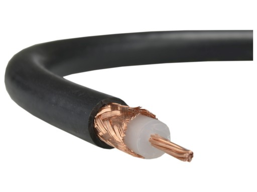
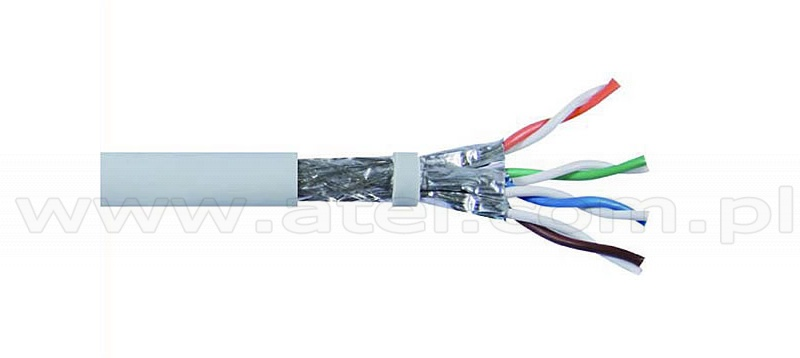
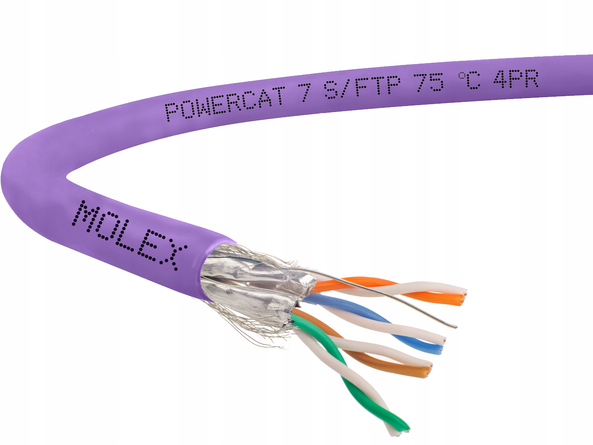
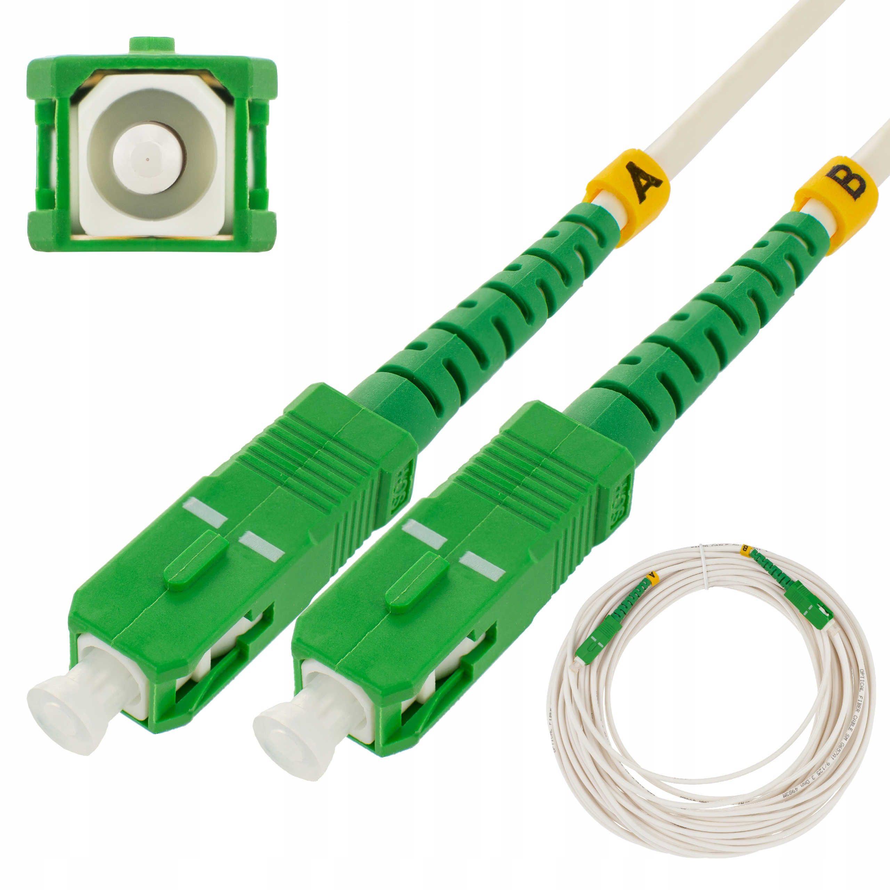
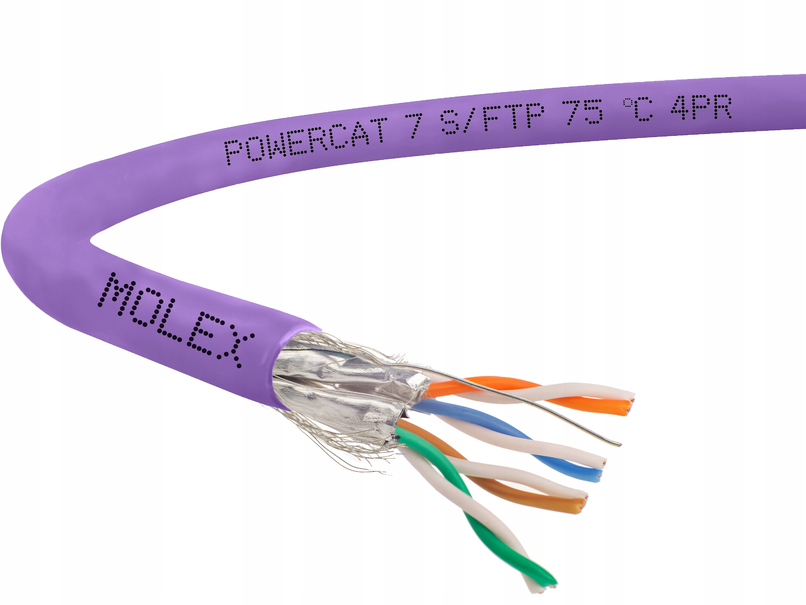
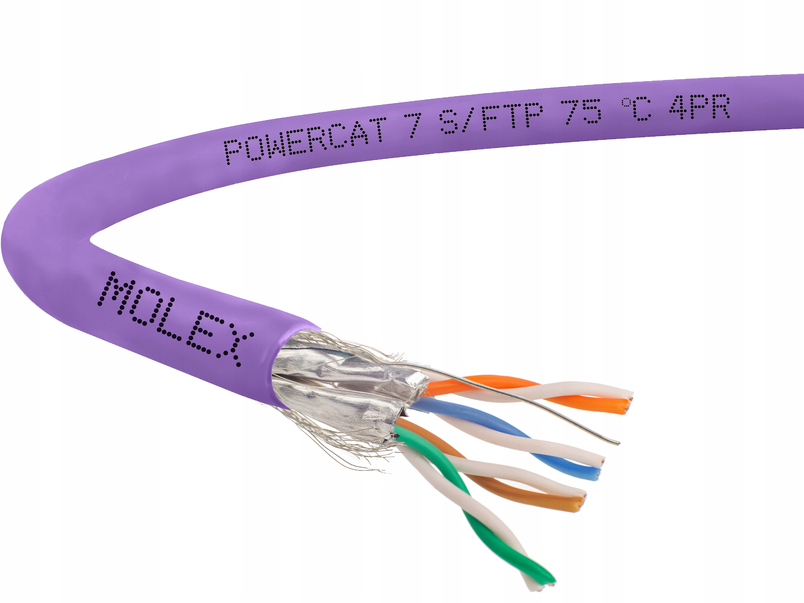

Medium transmisyjne - nośnik używany do transmisji sygnałów w telekomunikacji. Jest podstawowym elementem systemów telekomunikacyjnych. Możliwości transmisji zależą od parametrów użytego medium. Wyróżnia się media przewodowe i bezprzewodowe.
Rodzaje mediów transmisynych
Media transmisyjne można podzielić na przewodowe oraz bezprzewodowe.
Do przewodowych mediów transmisyjnych należą:
Kabel symetryczny (w tym tzw. skrętka)
Kabel współosiowy (kabel koncentryczny)
Kabel światłowodowy (światłowód jednomodowy lub wielomodowy)
Kable energetyczne
Do bezprzewodowych mediów transmisyjnych należą:
fale radiowe (fale elektromagnetyczne o częstotliwości do kilkudziesięciu GHz)
fale świetlne (fale elektromagnetyczne o częstotliwości powyżej 100 THz, np. światło lasera)
Media transmisyjne możemy podzielić również ze względu na rodzaj transmisji, jaki można w nich stosować:
Simpleks - transmisja tylko w jednym kierunku
Półdupleks - transmisja w obu kierunkach, ale nierównoczesna
Dupleks - równoczesna transmisja w obu kierunkach

Kabel koncentryczny (ang. coaxial cable, zwany także kablem współosiowym) - przewód telekomunikacyjny, wykorzystywany do transmisji sygnałów zmiennych małej mocy, którego wewnętrzna żyła otoczona jest izolatorem termicznym o okrągłym
przekroju; otoczony osłoną przewodzącą. Określnie koncentryczny pochodzi od wewnętrznego przewodnika, a zewnętrzna osłona dzieli geometryczną oś. Kabel koncentryczny został wynaleziony przez angielskiego inżyniera i matematyka Olivera Heaviside'a,
który opatentował projekt w 1880 roku. Kabel koncentryczny różni się od innych kabli osłonowych, ponieważ wymiary kabli są kontrolowane, aby zapewnić precyzyjny, stały odstęp między przewodnikami, który jest niezbędny do skutecznego działania
jako linii transmisyjnej. Kabel koncentryczny zbudowany jest z:
przewodu elektrycznego - zwykle z miedzi; linka skręcana miedziana, miedziowany drut stalowy lub drut aluminiowy, spotyka się również linki stalowe,
izolacji wewnętrznej (dielektryk) - zwykle od jednej do czterech warstw plecionego warkocza metalicznego i taśmy metalowej, oddzielającej przewodnik od ekranu. Od jej wymiarów oraz stałej dielektrycznej zależy impedancja falowa kabla.
ekranu - stanowi drugi niezbędny ośrodek przewodzący. Jednocześnie chroni sygnał przed zakłóceniami elektromagnetycznymi pochodzącymi ze środowiska. Najczęściej w postaci foli aluminiowej, oplotu miedzianego lub aluminiowego, czasami również w postaci tulei (przewody półsztywne),
izolacji zewnętrznej (choć nie zawsze) - pełni funkcje zabezpieczania przewodu przed uszkodzeniami mechanicznymi, wilgocią, dla tanich kabli z niepełnym oplotem stanowi ważny element konstrukcyjny
Zazwyczaj ekran jest utrzymywany w potencjale uziemienia, a napięcie przenoszące sygnał jest przyłożone do środkowego przewodu. Zaletą współosiowej konstrukcji jest to, że pola elektryczne i magnetyczne są ograniczone do dielektryka z małym wyciekiem
poza osłonę. Natomiast, na zewnątrz kabla, pole magnetyczne i elektryczne są w dużym stopniu chronione przed zakłóceniami sygnałów wewnątrz kabla. Kable o większej średnicy oraz kable z wieloma osłonami mają mniejszy wyciek (straty). Dzięki tej właściwości
kabel koncentryczny jest dobrym wyborem do przenoszenia słabych sygnałów, które nie mogą tolerować zakłóceń ze strony otoczenia lub silniejszych sygnałów elektrycznych, gdy nie wolno dopuścić do wypromieniowania, ani sprzężenia z sąsiednimi strukturami,
czy obwodami.

Skrętka - rodzaj przewodu sygnałowego służącego do przesyłania informacji, który zbudowany jest z jednej lub więcej par kabli skręconych ze sobą w celu eliminacji wpływu zakłóceń elektromagnetycznych oraz zakłóceń wzajemnych, zwanych przesłuchami.
Skręcenie żył powoduje równocześnie zawężenie pasma transmisyjnego. Wynalazcą tego rozwiązania jest Alexander Graham Bell. Skrętki mają zastosowanie w łączach telekomunikacyjnych oraz sieciach komputerowych, obecnie najczęściej wykorzystywana
jest w telefonii analogowej oraz w sieciach Ethernet. Skrętka ma zastosowanie przy przesyłaniu danych w postaci analogowej jak i cyfrowej.

Rodzaje skrętki (xx/yyTP):
U - nieekranowane (ang. unshielded)
F - ekranowane folią (ang. foiled)
S - ekranowane siatką (ang. shielded)
SF - ekranowane folią i siatką
Spotykane konstrukcje kabli:
U/UTP (dawniej UTP) - skrętka nieekranowana.
F/UTP (dawniej FTP) - skrętka foliowana.
S/UTP - skrętka nieekranowana dodatkowo w ekranie z siatki.
SF/UTP (dawniej STP) - skrętka ekranowana folią i siatką.
U/FTP - skrętka z każdą parą w osobnym ekranie z folii.
F/FTP - skrętka z każdą parą foliowaną dodatkowo w ekranie z folii.
S/FTP (dawniej SFTP) - skrętka z każdą parą foliowaną dodatkowo w ekranie z siatki.
SF/FTP (dawniej S-STP) - skrętka z każdą parą foliowaną dodatkowo w ekranie z folii i siatki.

Światłowód - przezroczysta zamknięta struktura z włókna szklanego wykorzystywana do propagacji światła jako nośnika informacji. Światłowody są także używane w celach medycznych, na przykład w technice endoskopowej, dekoracyjnych, w telekomunikacji,
telewizji kablowej, technice laserowej, optoelektronice i jako składniki zintegrowanych układów optycznych. Medium transmisyjnym jest włókno światłowodowe o średnicy nieco większej od średnicy ludzkiego włosa. Jego zalety to zasięg i pasmo transmisji
większe niż dla innych mediów transmisji Do transmisji danych, zamiast prądu elektrycznego, wykorzystywana jest modulowana fala świetlna, której źródłem może być laser półprzewodnikowy lub dioda elektroluminescencyjna (LED). Dzięki temu możliwa
jest transmisja danych do 3 Tb/s, a przepływ danych jest zabezpieczony przed niepowołanym dostępem. Światłowody, które jako medium transmisyjne wykorzystują powietrze, osiągają transfer danych rzędu 74 Tb/s.
Światłowody nie emitują zewnętrznego pola elektromagnetycznego, w związku z czym podsłuchanie transmisji jest kosztowne. Cechuje je duża odporność na zewnętrzne zakłócenia elektromagnetyczne, stopa błędów mniejsza niż 10?10 przy najwyższych
przepustowościach, mała tłumienność jednostkowa (około 0,20 dB/km dla fali o długości 1,5 ?m)
Aby wyeliminować lub ograniczyć wypromieniowanie światła przez boczne powierzchnie światłowodu, stosuje się odpowiednie zmiany współczynnika załamania światła. Promienie światła biegną prostoliniowo (światłowód skokowy) lub krzywoliniowo
(światłowód gradientowy), odbijając się od ścianek światłowodu w wyniku ciągłego zmniejszania się współczynnika załamania. W najprostszym przypadku są to zmiany skokowe - wewnątrz światłowodu współczynnik załamania ma wartość większą, niż na zewnątrz;
utrzymanie promieni światła w obrębie takiego światłowodu zachodzi na skutek całkowitego wewnętrznego odbicia. W przypadku, gdy współczynnik załamania stopniowo zmienia się w przekroju poprzecznym światłowodu, mówimy o światłowodach gradientowych.
Takie wyobrażenie działania światłowodu jest jednak uproszczone - tym bardziej, im mniejsze rozmiary poprzeczne ma rozważany światłowód. Zamiast promieni światła (będących podstawą przybliżonej optyki geometrycznej) należy rozważać światło
jako falę. Przybliżenie optyki geometrycznej jest sensowne jedynie dla światłowodów o dużych rozmiarach poprzecznych, traci natomiast sens, gdy rozmiar poprzeczny światłowodu staje się porównywalny z długością fali światła. Zjawiska falowe są
istotne zwłaszcza w światłowodach jednomodowych.
Wireless- potoczne określenie zestawu standardów stworzonych do budowy bezprzewodowych sieci komputerowych. Szczególnym zastosowaniem wi-fi jest budowanie sieci lokalnych (LAN) opartych na komunikacji radiowej, czyli WLAN. Zasięg od kilku metrów
do kilku kilometrów i przepustowości sięgającej 300 Mb/s, transmisja na dwóch kanałach jednocześnie. Produkty zgodne z wi-fi mają na sobie odpowiednie logo, które świadczy o zdolności do współpracy z innymi produktami tego typu. Logo Wi-Fi jest znakiem
handlowym należącym do stowarzyszenia Wi-Fi Alliance.
 
Rodzaje skrętki (xx/yyTP):

Rodzaje skrętki (xx/yyTP):